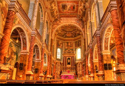

In and Around Mangalore :
Kudroli Gokarnath Temple : This beautiful temple is the abode of Lord Gokarnatha, another name for Lord Shiva
The Ullal Darga famous for Uroos fair has an interesting history behind its presence. Located about 10 kms from the heart of the city the darga is easily accessible by buses, auto-rickshaws ans taxis.
Surathkal beach : Water transport along the Arabian Sea had been established prior to Roman times, and only grew as time went on. Early trade routes that combined land travel with sections of marine travel were later eschewed to only encompass water transport as the trading lanes became more accessible.

Kadri Manjunatha Temple :Situated on the hills of Kadri, the temple of Manjunateshwara is a very popular place of worship in Mangalore.
Shri Sharavu Mahaganapathi Temple : The historic Shri Mahaganapathi Temple has an illustrious history of a staggering 800 years.

Sultan Battery : Sultan Battery is famous for the watch tower constructed by Tipu Sultan. The Water Sports and Adventure Centre is situated adjacent to Sultan Battery. This adventure centre indulges in aquatic activities like canoeing, kayaking, wind surfing, speed boat rides, banana boat rides and bumper tubes.
St.Mary’s island is a little slip of land about 30 minutes out into the sea from Malpe Beach in Udupi. The island is full of crystallised basalt rock, a unique rock formation found in very few places in the world, the most notable being the Giant Causeway in Northern Ireland.

Kateel (27 kms) : It has a famous temple dedicated to Goddess Shree Durga Parameshwari, the loving and caring mother of the people of South Kanara.
St Aloysius College Chapel was built in the year 1882 by the Jesuits is on the lighthouse hill. The Chapel is compared to Sistine Chapel in Rome. There are a lot of oil paintings covering the entire ceiling and walls of the chapel depicting the life of St Aloysius and there are also scenes from the Bible.This place is one of the Major tourist attraction.


Perambur Beach which is located 10Kms from the city of Mangalore,is known for its cleanliness and safety. It is the site of New Mangalore Port. It is located in north of the Gurupura river. The city’s most visited beach, Panambur is a place where one can enjoy the breath taking view of the sunset.
Pilikula Nisargadhama located at Mudushedde, just 10 Kms from Mangalore, Pilikula Nisargadhama is an integrated nature park that will offer a delightful variety of attractions to the eco-tourist and nature lovers.

Moodabidri (50 Kms) : Moodabidri is famous for its 1000 Pillar Jain Shrine.